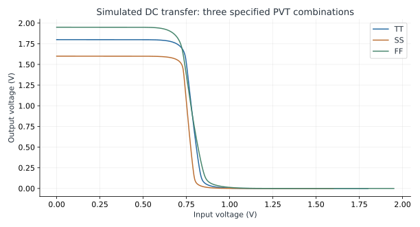
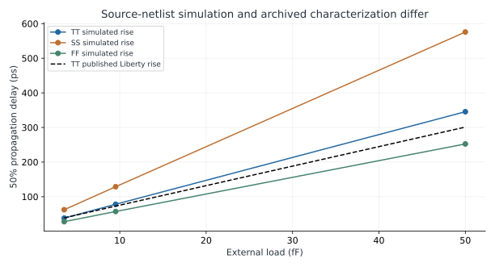
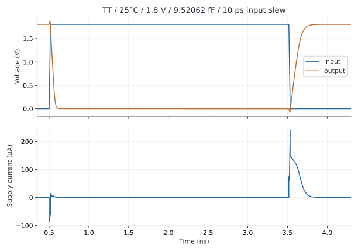

Lab 1 · Characterize a SKY130 Inverter
Connect transistor behavior, timing tables, capacitive loading, and switching energy.
- Connect an actual SKY130 inverter subcircuit, including body and supply pins.
- Measure DC transfer, propagation delay, transition time, current, and energy with stated conventions.
- Compare transistor simulation with Liberty while identifying differences between models.
- Change load, slew, and PVT systematically and explain the result in analog and digital terms.
Execution status: 18 transistor-level cases executed with ngspice 44.2. Every case includes DC and transient analysis. This is schematic-level characterization of an upstream two-device netlist with pinned public SKY130 models.
- Runner: run.py
- Instructions and file map
- Recorded measurements (CSV)
- Conditions, models, and simulator record
- Upstream inverter subcircuit
- Published TT timing-table source
Read the shared setup guide before running. Recorded results are included so you can study the lab without installing tools.
1. Why start with a single inverter?
A logic symbol hides an analog transfer curve, nonlinear output resistance, two body connections, and a current waveform. This lab makes those properties visible in a small standard cell. A digital designer can follow a delay-table entry back to a voltage waveform. An analog designer can see why input slew and capacitive load are characterization axes, and why one hand-calculated resistance does not describe every transition.
The cell is sky130_fd_sc_hd__inv_1. Its upstream subcircuit uses an NMOS with W=0.65 µm and L=0.15 µm and an HVT PMOS with W=1.00 µm and L=0.15 µm. These dimensions describe this source revision; the suffix _1 is not a universal transistor-width unit. The source writes equivalent numeric values such as 650000u and relies on the model environment's micrometre scale. The wrapper uses .option scale=1u. Appending another u to a new width already expressed numerically in micrometres would apply the conversion twice.
2. Read the bench before pressing Run
The subcircuit pins are A VGND VNB VPB VPWR Y. The instance XINV a 0 0 vdd vdd y ties NMOS body and ground to zero and PMOS body and positive rail to VDD. A swapped body or output pin can produce a plausible-looking waveform for the wrong circuit. Check the declaration and instance together.
| Item | Value or convention | Reason |
|---|---|---|
| Conditions | TT/25 °C/1.8 V; SS/100 °C/1.6 V; FF/−40 °C/1.95 V | Three selected condition bundles, not an exhaustive independent PVT sweep. |
| Output loads | 3.56533, 9.52062, 50 fF | Small, intermediate, and heavier loads; two are convenient published table-grid values. |
| Input slew | 10 or 100 ps, measured from 20% to 80% | Full linear ramp = slew/0.6; 10 ps requires a 16.667 ps ramp. |
| DC sweep | Input from 0 to VDD in 2 mV steps | Interpolate the Vout=Vin crossing. |
| Transient | 0–7 ns; maximum timestep 1 ps | One complete output discharge/charge cycle after initialization. |
| Geometry | No explicit diffusion area/perimeter or extracted layout | A material limitation in Liberty comparisons. |
The 50% thresholds scale with supply. A fixed 0.9 V threshold would be inappropriate across all three conditions. The source rises after 0.5 ns, stays high for 3 ns after the rise, then falls. The record includes both output transitions without a second pulse. DC initialization starts the output high; energy spent establishing that state before time zero is outside the integration window.
3. Reproduce the runs
Run these commands from the extracted learning folder after installing the shared Python requirements and ngspice. The runner uses local models, saves every deck and log, and checks model hashes. It does not install tools or download a PDK.
python labs/L01_inverter/run.py
# If ngspice is not on PATH:
python labs/L01_inverter/run.py --ngspice /path/to/ngspice
# Choose a separate experiment directory:
python labs/L01_inverter/run.py --output labs/L01_inverter/my_runThe default writes run_results/, preserving the included results/ record. Start with summary.csv, then open a case's bench.spice, ngspice.log, dc.dat, and tran.dat. The same tool and models should give close numerical agreement. Changing the simulator, model, timestep, or tolerance creates a new experiment and should be recorded.
4. DC transfer: a gate has analog gain
Vout=Vin is a convenient switching-point metric. It is not automatically VIH, VIL, or a complete noise-margin characterization. Those require additional conventions, often involving the transfer curve's slope and specified output levels. Near the transition, both transistors conduct and a small input change produces a larger output change. At the rails, one device mainly provides the restoring path.

At a fixed DC solution, an ideal capacitor carries no current and does not move this transfer curve. DC is therefore a useful connection check but does not establish speed. Charging the load is an additional time-domain problem.
5. Measure delay and slew separately
tPHL runs from the input's rising 50% crossing to the output's falling 50% crossing. tPLH uses falling-input and rising-output crossings. Output rise time runs from 20% to 80%, and fall time from 80% to 20%. Propagation delay compares two signals; slew compares thresholds on one signal. Confusing them invalidates a library comparison even when the plot looks right.
| TT/1.8 V/25 °C; 10 ps input slew | tPHL (ps) | tPLH (ps) | Supply energy (fJ) |
|---|---|---|---|
| Cload = 3.56533 fF | 18.909 | 38.071 | 15.352 |
| Cload = 9.52062 fF | 35.987 | 78.168 | 34.970 |
| Cload = 50 fF | 150.758 | 345.516 | 166.332 |

At 9.52062 fF in the nominal case, output rise time is 93.483 ps and fall time is 37.142 ps. They differ from the 78.168 ps and 35.987 ps propagation delays. A larger PMOS width does not ensure equal pull-up and pull-down strength, especially with the HVT PMOS used here.
The published TT Liberty values at the same axes are tPHL=45.4996 ps and tPLH=72.8467 ps. The runner uses bilinear interpolation only within the available TT axes and leaves other-corner comparisons blank. It does not extrapolate TT into SS or FF. The two-device schematic omits explicit junction geometry and characterized extracted details, and the original characterization environment is not reconstructed. Treat the discrepancy as a model-correlation question. Do not adjust model coefficients merely to make the numbers agree.
6. Current, power, and energy
Ngspice defines source current into the positive terminal. A source delivering energy therefore commonly has negative i(VDD). The runner integrates −VDD × i(VDD) over 0–7 ns. Reversing the sign would report negative consumed energy. Peak current and integrated energy answer different questions: the peak affects local supply disturbance; repeated-cycle energy helps estimate average power.

For a fully charged/discharged ideal external capacitor, the source energy per complete cycle is approximately CVDD². Here 9.52062 fF × (1.8 V)² = 30.847 fJ; the measured total is 34.970 fJ, including additional modeled cell mechanisms and the finite measurement window. Half of CV² is stored energy at the charged state. CV² is ideal supply energy for a complete charge/discharge cycle through resistive switches. This distinction prevents a common factor-of-two mistake.
The nominal peak current is about 240.5 µA. Multiplying that peak by the entire period would overestimate energy because the pulse is brief. Conversely, low average current can still produce a sharp L·di/dt disturbance. Connect this lab to lesson 69 by adding a supply impedance after understanding the ideal-supply baseline.
Brief negative values of delivered supply current can occur when switching capacitances return charge to the ideal source. The energy integral is signed, so returned charge subtracts from net consumption. A rectangular approximation using the peak current would miss both the short pulse duration and this reversal.
7. Experiments that reveal the limits
First hold corner, voltage, and slew fixed and change only load. Then hold load fixed and compare the two slews. A slow input changes how long both devices conduct and changes the waveform used for delay measurement. Do not assume every energy or delay metric increases monotonically with every parameter; inspect the definition and trace.
Next separate the bundled corner changes. Compare TT at several supported temperatures with one supply before changing device corner. The shipped SS and FF cases demonstrate combined conditions, but confound three variables and cannot establish which one caused a difference. Temperature inversion and transition-specific behavior are reasons to measure rather than name a universal worst case.
For numerical confidence, halve the maximum timestep in a fast case and compare crossings and energy. If results change materially, refine numerical settings before interpreting circuit behavior. For a physical experiment, add known series resistance and capacitance and compare with the baseline. A true post-layout comparison requires the project's approved extraction flow and a complete statement of included parasitics.
Finally define a current measurement for the question you actually care about. Peak current at a single supply terminal, charge per edge, current averaged over an active burst, and current averaged over a long idle/active schedule are different quantities. A digital activity factor counts transitions under a stated convention; an analog power estimate must use the same event definition to avoid counting each charge twice.
8. Write a small characterization report
Use the CSV to select a single operating condition and report the entire measurement definition, not only the answer. A useful report states the source revision, transistor models, supplies, temperature, load, input waveform, threshold percentages, timestep limit, and integration window. Include the input and output waveforms with the two relevant crossings marked. Another engineer should be able to reproduce your conclusion without guessing which edge you measured.
Then compare the two input-slew cases at one load. Explain the effect through the input trajectory and the transistor conduction overlap. Check both propagation delay and output transition time; they need not change by the same percentage. A large input slew can move an input threshold crossing relative to the start of output motion, which is one reason a propagation-delay number is a waveform-dependent measurement rather than a fixed material property.
For a power exercise, use the nominal 34.970 fJ cycle energy and assume one complete output cycle per 10 ns. Ignoring differences in idle leakage and activity between the seven-nanosecond record and this repeated schedule gives approximately 3.497 µW of switching power. If the output performs a full cycle only one tenth as often, that contribution scales to about 0.350 µW. The cell's static leakage and other system clocks do not disappear. State explicitly whether an activity count refers to individual transitions or complete charge/discharge cycles.
For a library exercise, locate the matching input-transition and output-load table coordinates in the supplied JSON. Identify whether the selected point is on the grid or interpolated. The first two loads and the 10 ps slew make some comparisons exact grid lookups; other points require interpolation. An allowed maximum output capacitance is a constraint used by the implementation flow. It is not an instruction to connect that much load, nor does dividing it by one nominal pin capacitance establish a universally legal fanout.
Finally list one omitted mechanism that could change your conclusion and a concrete next experiment. For delay, choose extracted output wiring or diffusion geometry. For current peaks, choose a supply/package impedance. For variation, choose an independent PVT sweep or a supported statistical model. This practice ties the scope of a result to the requirement being evaluated rather than treating a successful simulator exit as complete verification.
Checkpoint: is the 93.483 ps output rise time tPLH?
No. It is the 20–80% transition time. tPLH is measured between the falling input 50% crossing and rising output 50% crossing: 78.168 ps in the nominal case.
Checkpoint: does 34.970 fJ per cycle establish maximum clock rate?
No. It supports an energy estimate for this stimulus. Usable rate also depends on settling, timing paths, setup/hold, clock waveform, and activity. Energy per cycle times rate estimates dynamic power only when the definitions match.
Key takeaways
- Inspect pin order and body connections before interpreting a waveform.
- State thresholds, windows, units, and stimulus with measurements.
- Use actual Liberty axes and retain model discrepancies.
- Schematic transistor simulation is a baseline, not extracted-cell signoff.
Sources and scope
Checked 6 November 2026. Diagrams and worked examples are original. Assumed values describe teaching models; recorded simulations retain their decks, data, and tool versions.
- SKY130 HD inverter source — pinned subcircuit and characterization; local copies retain hashes.
- SKY130 primitive models — pinned NMOS/HVT PMOS models with stated scale and corners.
- ngspice version 44 manual — DC/transient analysis, current sign and simulation controls.
- SKY130 HD documentation — library context; geometry and performance remain view-specific.
All 84 lessons
- Part I · Foundations: the physical chip and its vocabulary
- 1. What Is a Chip? Board, Package & Die
- 2. The Silicon Wafer: From Crystal to Dies
- 3. How a Die Is Built: SKY130 Layers & Lithography
- 4. The MOSFET: SKY130’s Transistor
- 5. Anatomy of a Die: Core, Pad Ring & Seal Ring
- 6. Packages: Wire Bonds, Flip-Chip, QFN & WLCSP
- 7. The PCB and the Path to the Transistor
- 8. The Design Flow and Its Files: RTL to GDS
- 9. Signals Primer: DC, AC, RMS, Decibels & the FFT
- Part II · Transistors to logic gates
- 10. Logic Gates at the Transistor Level
- 11. Drive Strength & Transistor Sizing
- 12. More Gate Topologies
- Part III · Standard-cell layout
- 13. Site Rows & Standard Cell Placement
- 14. The Power Grid & Routing Grids
- 15. Metal Layers, Vias & the Stackup
- 16. Inside a Standard Cell's Layout
- 17. The Cell Template: Tracks, Sites & Edges
- 18. Anatomy of a Bigger Cell
- 19. Pin Access & Porosity
- 20. A Flip-Flop From the Inside
- Part IV · Loads, timing and interconnect
- 21. Loads
- 22. Liberty Files: What a Cell Library Records
- 23. Reading Liberty Timing Tables
- 24. Standard-Cell Characterization: How Liberty Is Made
- 25. Timing
- 26. Setup and Hold
- 27. Latch-Based Design & Time Borrowing
- 28. Routing Resistance and Parasitics
- 29. Delay from Physics: Transistor, Contact, Via, Wire & Gate
- 30. Electromigration
- 31. Reliability & Aging: HCI, BTI, TDDB & Self-Heating
- 32. DFM, Variation & Yield: A Digital View
- Part V · Digital implementation
- 33. RTL Patterns: FSMs, Handshakes, Resets & Lint
- 34. RTL, Synthesis & Timing Constraints
- 35. The Clock Tree
- 36. Clock Generation: Oscillators, DCO, PLL & Jitter
- 37. Clock Gating & Power States
- 38. Power Analysis & Low-Power Cells
- 39. Clock-Domain Crossings & Reset
- 40. Scan
- 41. DFT Beyond Scan: Faults, ATPG, BIST and JTAG
- 42. A Timed Logic Path: Registers, Clocks, Scan & Speed/Power
- 43. Memories: SRAM, OpenRAM and DFFRAM
- 44. Datapath & Arithmetic
- 45. Multi-Corner STA: OCV, CRPR & Hold Cells
- 46. Functional Verification: Testbenches, Assertions, Formal & Gate-Level Sim
- Part VI · Physical cells and the floorplan
- 47. Fill Cells
- 48. Well Taps and Latch-up
- 49. Endcaps
- 50. Tie Cells
- 51. Antenna Diodes
- 52. Decap Cells
- 53. Spare Cells and ECO
- 54. Level Shifters
- 55. Floorplan
- 56. Caravel Integration: The User Project Wrapper
- 57. Hierarchical Design, Abstracts & ECO
- 58. Placement: Global, Legalization & Detailed
- 59. Routing & Timing Closure
- 60. Digital Signal Integrity: Crosstalk Delay & Glitch
- 61. Metal Fill and Cell Fill
- 62. Physical Verification Signoff
- 63. Power-Integrity Signoff: Static IR, Dynamic IR & EM
- Part VII · The chip boundary: I/O, ESD and package
- 64. The I/O Ring
- 65. ESD and Clamps
- 66. I/O Fill
- 67. RDL Routing
- 68. I/O Power and IR Drop
- 69. Power, Package & Thermal Coupling
- 70. Tapeout, MPW & Tiny Tapeout
- 71. Post-Silicon Bring-Up, Test & Characterization
- Part VIII · Analog circuits
- 72. Analog Bias, gm & Headroom
- 73. Feedback, Loading & Stability
- 74. Differential Pairs, Common Mode & CMFB
- 75. Noise, Mismatch & Variation
- 76. References, Temperature & Startup
- 77. Comparators & Power Management: StrongARM, LDO & POR
- 78. Matching, Layout & Extracted Netlists
- Part IX · Mixed-signal: sampling, conversion and verification
- 79. Sampling, Aliasing & Settling
- 80. ADC & DAC Interfaces
- 81. FFT, Noise & Distortion Measurements
- 82. Calibration, Trimming & Testability
- 83. Crosstalk, Return Paths & Isolation
- 84. Mixed-Signal Verification & Bring-Up
Updated 11 November 2026 · 84 lessons · Offline lessons, diagrams, source code and recorded results · External references require internet access.